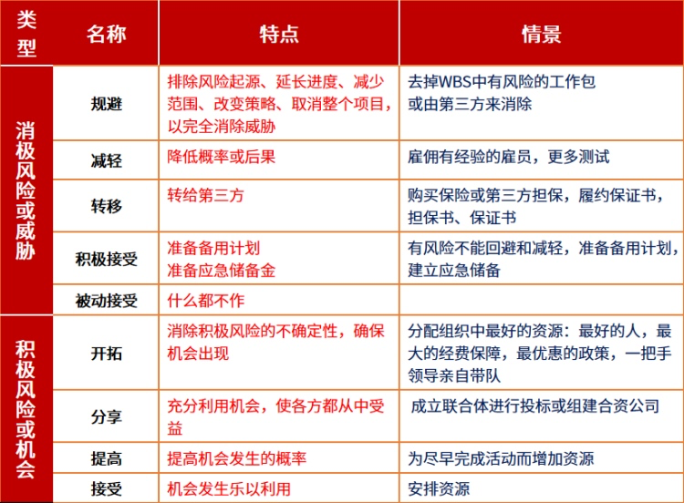
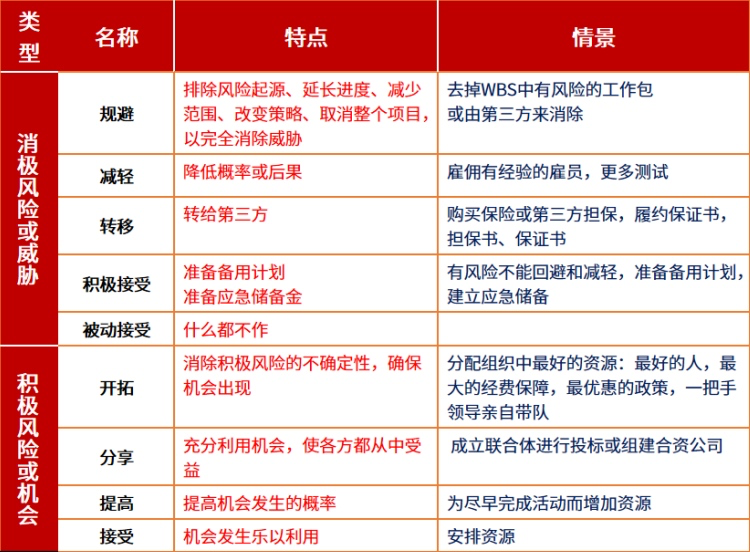

风险管理
15、风险管理
风险的定义
广义风险
1 | 风险是一种不确定的事件或条件，一旦发生，就会产生积极或消极的影响 |
狭义风险
1 | 风险定义为损失的不确定性 |
风险的分类
- 按照性质划分为 纯粹风险和投机风险
纯粹风险
1 | 指只有损失可能性而无获利可能性的风险。比如房屋所有者面临的火灾风险 |
投机风险
1 | 相对于纯粹风险而言，是指既有损失的可能又有获利的机会的风险。其后果一般有三种情况：没有损失、有损失、有收益。比如股票市场买卖股票 |
- 按照产生原因划分为 自然风险、社会风险、政治风险、经济风险和技术风险
自然风险
1 | 指因自然力的不规则变化使社会生产和社会生活等遭受威胁的风险。如地震、风灾、水灾以及各种瘟疫等自然现象是经常的、大量发生的。自然风险的特征有：不可控性、周期性和共沾性 |
社会风险
1 | 指由于个人或团体的行为（包括过失行为、不当行为以及故意行为）或不作为使社会生产以及个人生活遭受损失的风险，如盗窃、抢劫、玩忽职守及故意破坏等 |
政治风险
1 | 是指在对外投资和贸易过程中，因政治原因或订立双方所不能控制的原因，使债权人可能遭受损失的风险。如因进口国发生战争、内乱而中止货物进口，因进口国实施进口或外汇管制等等。 |
经济风险
1 | 指在生产利销售等经营活动中由于受各种市场供求关系、经济贸易条件等因素变化的影响或经营者决策失误，对前景预期出现偏差等导致经营失败的风险。比如企业生产规模的增减、价格的涨落和经营的盈亏等。 |
技术风险
1 | 指伴随着科学技术的发展、生产方式的改变而产生的威胁人们生产与生活的风险。如核辐射、空气污染和噪音等。 |
风险的性质
1 | * 客观性 |
风险管理计划主要内容
1 | * 方法论 |
风险分解结构（RBS）
1 |
风险识别的原则
1 | * 风险识别原则包括： |
风险的应对策略
 

1 |
风险的定义
1 |
本博客所有文章除特别声明外，均采用 CC BY-NC-SA 4.0 许可协议。转载请注明来自 East'blog！